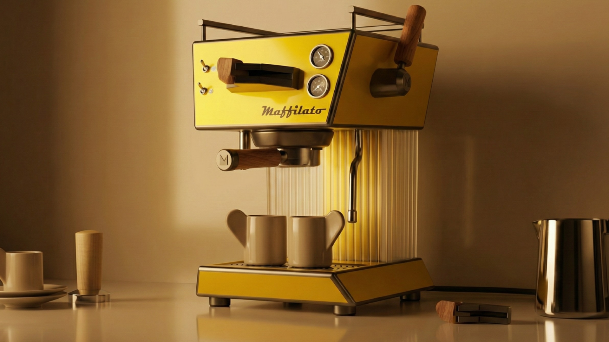
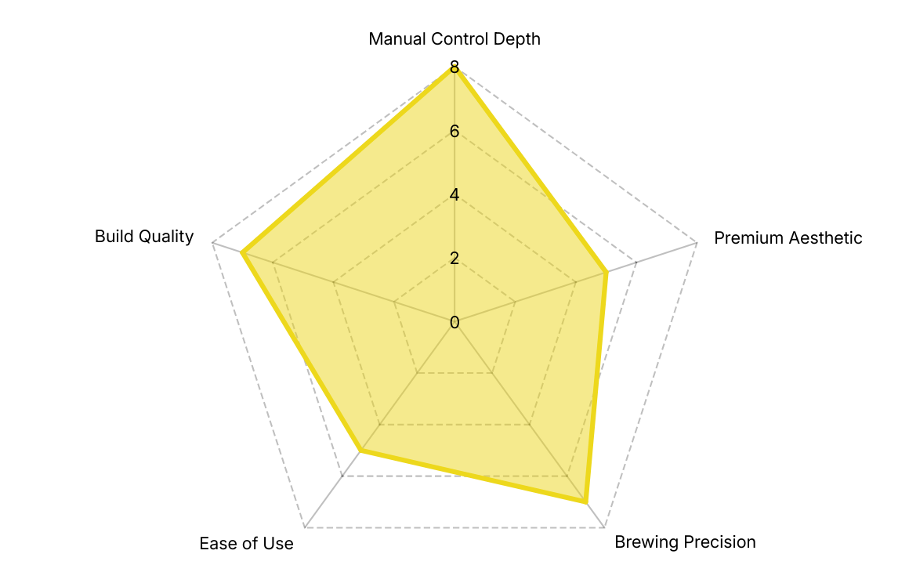
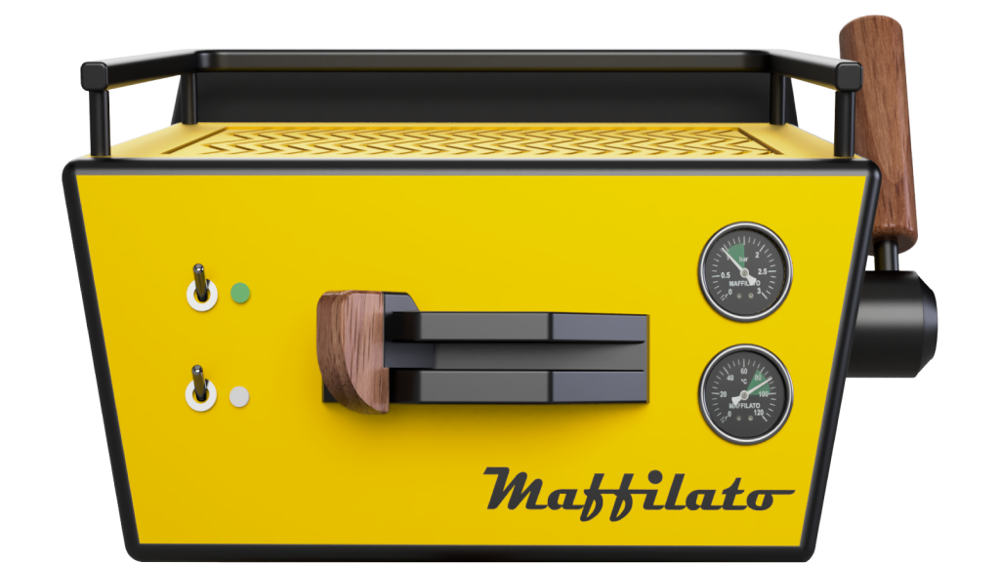
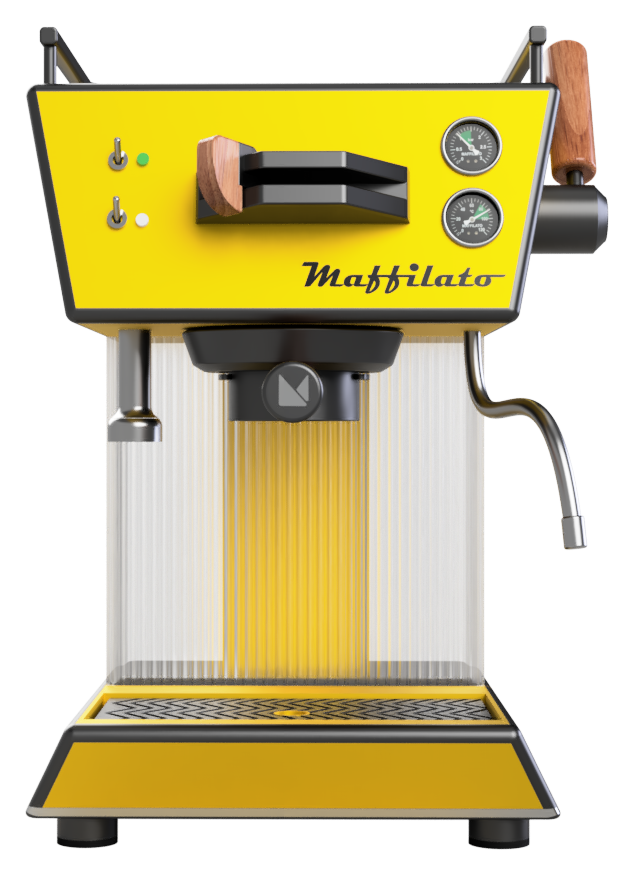
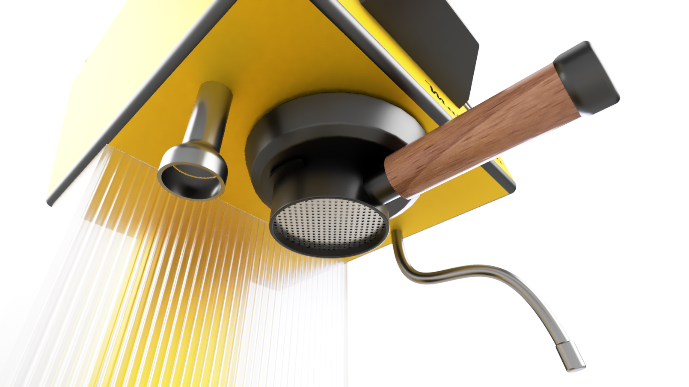
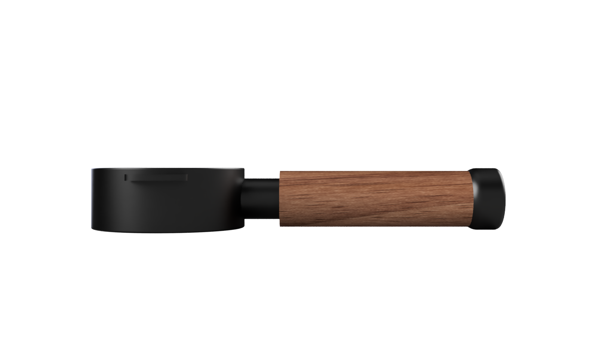
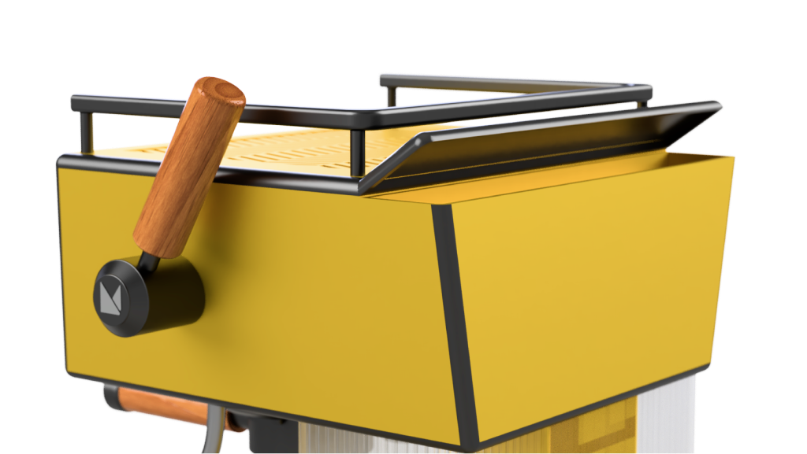
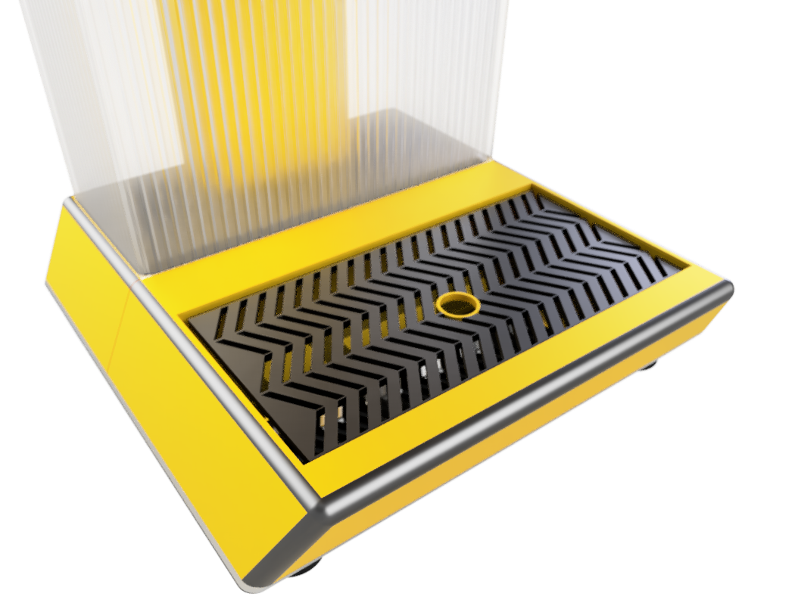
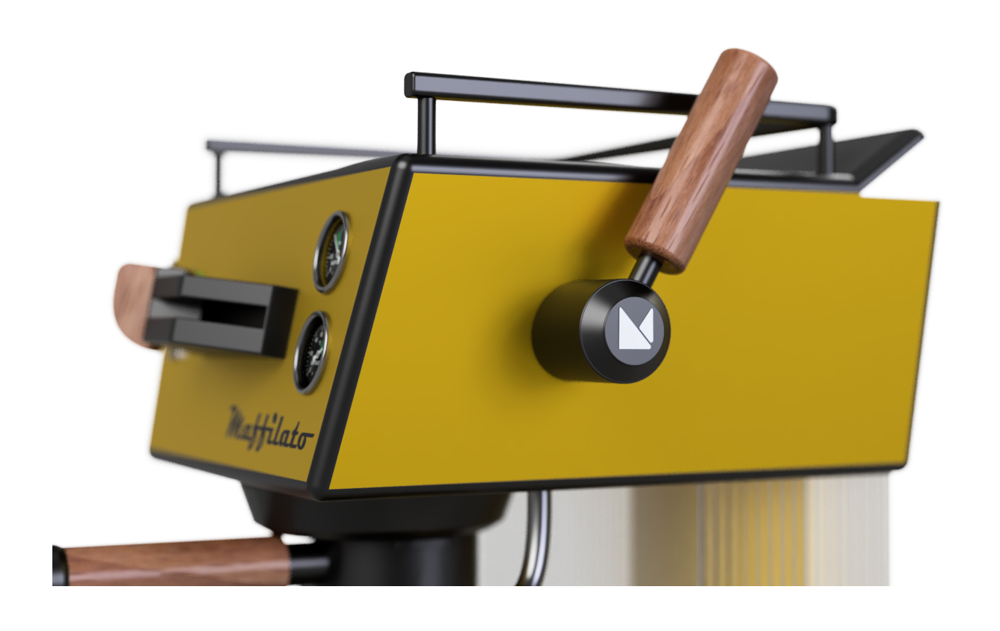

Manual brewing experience
Every parameter is adjusted by hand, giving the user complete control over the brewing process.
A manual espresso machine for coffee enthusiasts who value control, precision and the ritual of brewing.

Designed for those who truly enjoy the craft of coffee, Maffilato offers manual control over pressure, extraction and flow. It celebrates hands-on brewing, encouraging experimentation and mastery. Bold form and tactile controls make the brewing process part of the experience, rather than treating the final cup as the only outcome.
Every parameter is adjusted by hand, giving the user complete control over the brewing process.
Hands-on brewing encourages experimentation and mastery, making the preparation of espresso part of the experience.
Metal surfaces and wooden touchpoints combine solid build quality with a tactile, mechanical character.
The machine is intended for people who value the ritual and precision of making espresso, as well as the final cup.
Control the water flow in real time to shape flavour, body and balance.
Front-facing gauges keep pressure and temperature visible alongside the manual controls.
The machine prioritises manual control and brewing precision over automation. Its design is intentionally skill-based, offering a tactile and mechanical experience supported by solid build quality and a refined aesthetic.

The ideation studies explore the body, brewing area, handles, controls and overall proportions. The original sketches show the range of form and component arrangements considered in the project.
Flow, pressure, temperature, steam and water are manually controlled, giving the user authority over the brewing process. The controls and indicators are organised around the front panel, upper cup surface and side-mounted steam control.


A dedicated switch on the front panel.
A separate front-panel control for hot water.
A tactile central control for adjusting the water flow.
A wooden control positioned on the side of the machine.
An analogue pressure indicator on the front panel.
An analogue temperature indicator below the pressure gauge.
An upper surface with a retaining rail for cups.
With no protrusion underneath, the portafilter sits flat for easy tamping. The naked portafilter design allows clear flow observation and quick channeling detection.


Rear access to the water tank and an integrated waste water tray address the everyday tasks that surround brewing: filling, collecting drips and keeping the working surface clean.


The rear access allows the water tank to be filled easily without interrupting the brewing workflow.
The integrated waste water tray collects excess water and drips, ensuring a clean and maintenance-friendly surface.
The final product views bring together the metal body, wooden touchpoints, exposed brewing area and upper cup rail. The yellow panels give the machine a recognisable presence while the mechanical controls remain central to its character.
